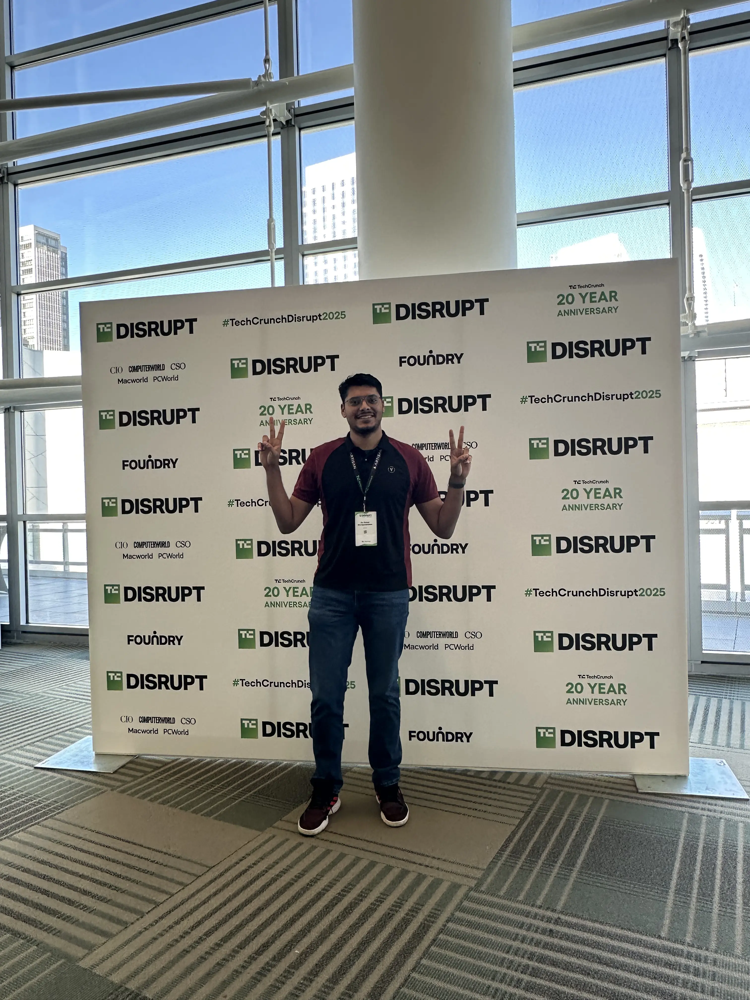
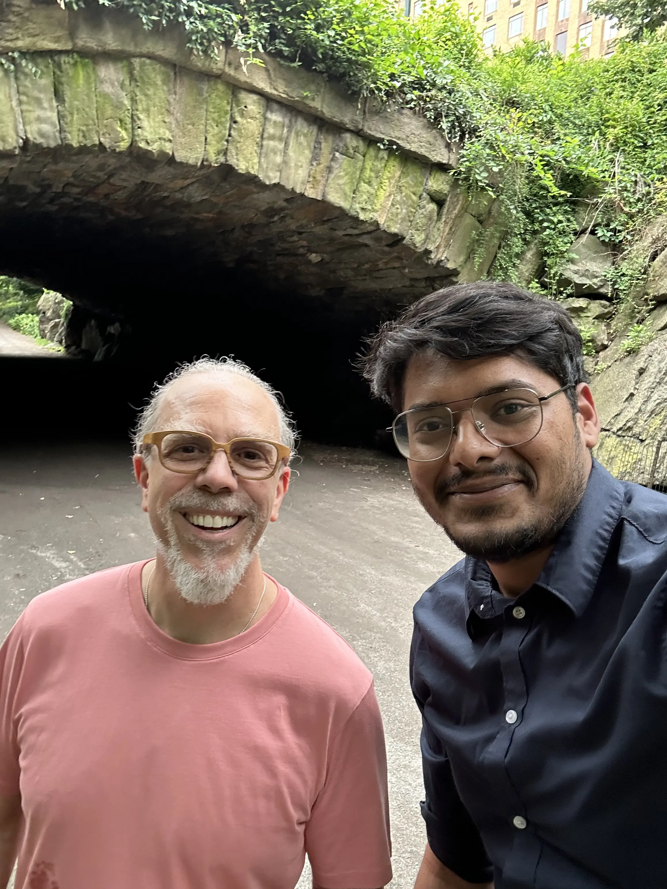
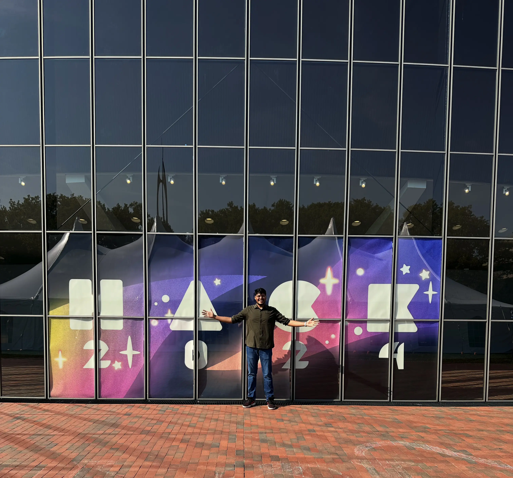
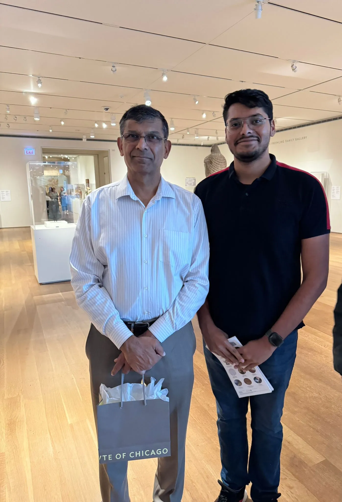
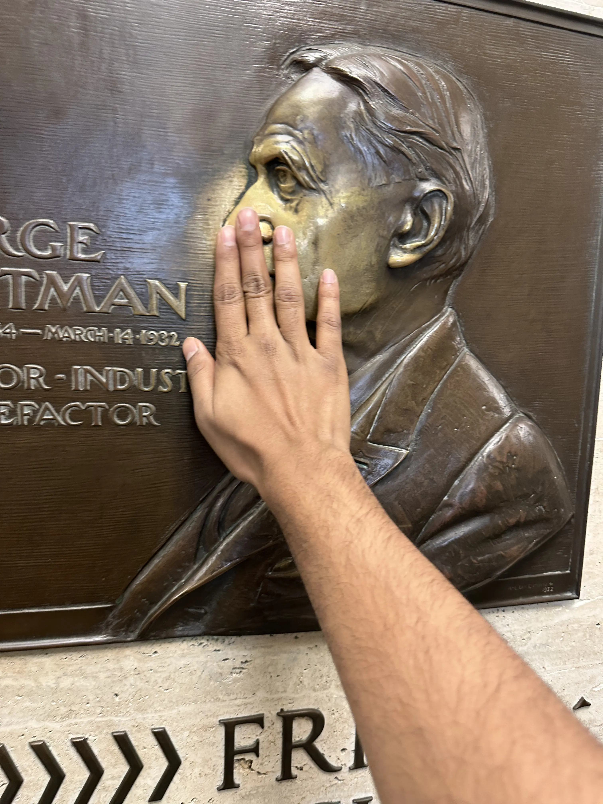
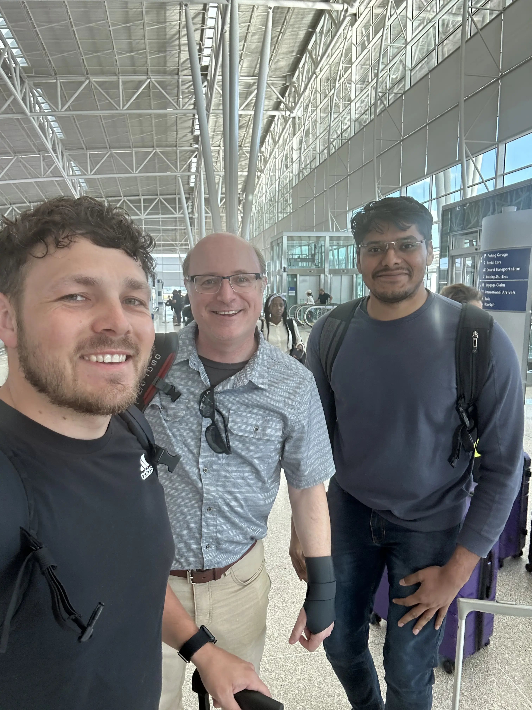
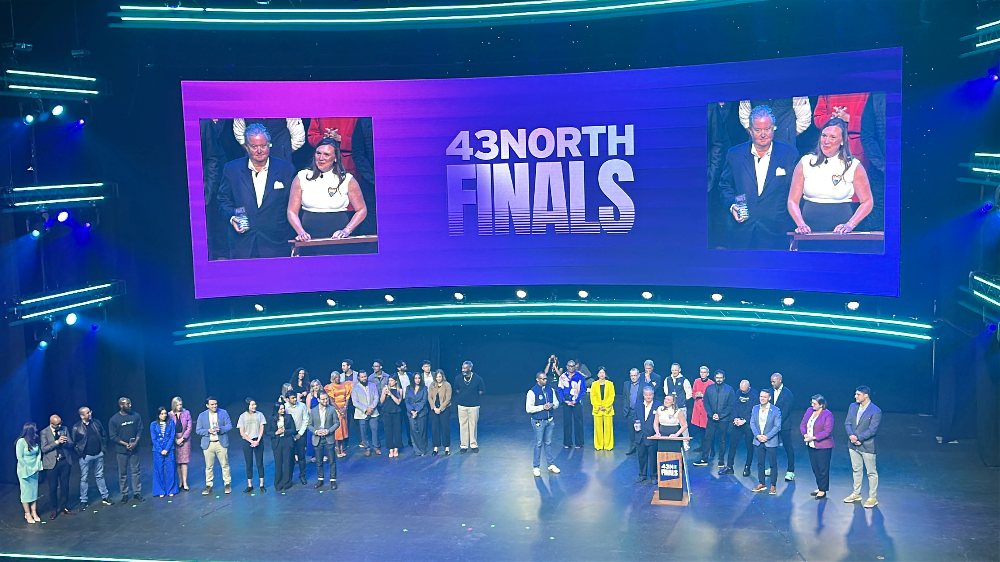

TechCrunch Disrupt 2025
20th anniversary edition, San Francisco
Cloud computing · Full-stack development · AI/ML
India
Hey, I’m Felix, a Computer Science student specializing in Cloud Computing. I build full-stack and machine-learning systems that are useful, scalable, and grounded in real people’s needs.
I’m pursuing a B.Tech in CSE Cloud Computing at SRM Institute of Technology (CGPA 8.3/10, expected 2027). My work moves between React and backend services, cloud deployment, databases, and the curious edge of AI.
I enjoy translating a rough problem into a clear product: understanding the workflow, building the system end to end, and polishing the details that make it dependable. I’m especially drawn to cloud-native software, intelligent automation, and computer vision.
✦ Currently building, learning, and open to software opportunities.
Web-based NLP platform that evaluates candidate resumes, extracts structured competencies, scores job match compatibility, and suggests career improvements.
Interactive canvas-based workflow builder and execution simulator built with React Flow and Zustand state architecture.
High-throughput Node.js backend system that processes hierarchical node relationships, validates DAG constraints, and computes tree insights.
AI-powered football match outcome prediction system for the FIFA World Cup 2026 combining player form analytics, historical stats, and ML models.
Enterprise security pipeline detecting and masking Personally Identifiable Information (PII) across banking, healthcare, and educational datasets.
Computer vision pipeline that detects human emotional states from live camera streams in real time.
Industrial IoT telemetry analysis platform detecting mechanical degradation before equipment failure occurs.
Statistical modeling and healthcare feature importance evaluation platform for cardiovascular metrics.
Responsive administrative web portal for role permissions, user search/filtering, and session telemetry.
Full-stack modern online store featuring product catalog, cart persistence, checkout, and inventory tracking.
Deep learning model architecture for automated fall identification from ambient surveillance video.
Simulated cybersecurity threat assessment, log triage, and incident response architecture.
Generative AI-powered exploratory data analysis and executive insight generation framework.
Infrastructure-as-Code automation templates and GitHub Actions deployment workflows on AWS.
Unified branding guidelines, reusable UI component library, and digital event asset engine for SRM-IST.
Ultra-fast responsive portfolio website with custom dot grid, night celestial animations, and typography scaling.
Centralized open-source developer hub showcasing repositories, commit activity, and software contributions.
People I've met, places I've been, and moments worth remembering.

20th anniversary edition, San Francisco

CEO of Google X. Randomly met and recognized him at Central Park, NYC. He said I was only the 2nd person to ever recognize him in the city.

Judge and mentor at MIT, Cambridge

Economist and former Governor of the Reserve Bank of India. Met him at the Art Institute of Chicago.
On the floor at Shea’s Performing Arts Center, Buffalo.
Celebrating cloud certifications, AI agents, and next-gen architectures.
At MIT as judge and mentor for HackMIT, Cambridge
Cambridge, Massachusetts

Rubbing the nose for good luck, a beloved MIT student tradition

Annual all staff meeting, 2024

On the floor at Shea’s Performing Arts Center, Buffalo
University at Buffalo game night
I track my learning, habits, investments, and daily life at life.sribalaji.io. A personal workspace I built for myself, a private dashboard that connects to Google Fit to display my own health and fitness data (steps, weight, sleep), alongside journaling, goal tracking, and productivity tools.
Just to see what truly makes a person impactful, specially what and how people at MIT, Harvard, and Stanford operate and work. I visited MIT twice, once on my own trip to attend HackMIT, just to get a chance to interact with Ivy League students, professors, and alumni who came there to promote their startups. I observed a common pattern there in what they were working on and trying to solve. Almost all of them were working on one hard thing. One team from Berkeley was working on brain scan analysis to detect disease patterns earlier, and when they explained it, I couldn't even fully understand it. Even in electronics and software, their use cases were very specific, solving hard problems as a team.
Overall, it all boils down to one thing I see: Excellence.
I might have already crossed the age of going back to school just to chase that kind of excellence. But excellence and learning are a lifelong journey. My mission is to live by this value and mindset of excellence, to keep learning and keep working on hard problems to make an impact in people's life, for as long as I am on this earth : ) Will keep trying.. Will keep DOING
03 / Toolkit
C++, Python, C, SQL, Data Structures & Algorithms, Object-Oriented Programming
Machine Learning, Data Preprocessing, Model Evaluation, Statistical Analysis
MySQL, MongoDB, DBMS, REST APIs, Postman
AWS, Cloud Deployment, Git, GitHub Actions, CI/CD, Agile
Machine Learning, NLP, RAG, AI Agents, LangChain, Model Context Protocol (MCP)
Node.js, Express.js, Microservices, JWT Authentication
React.js, Next.js, HTML, CSS, Tailwind CSS
Operating Systems, Computer Networks
SRM Institute of Technology
St. Joseph Mat. Hr. Sec. School, Chennai (Subjects: PCM + Computer Science)
I taught myself to skate in two days flat, no tricks yet, that's next. I love chess, play matches randomly on chess.com, ELO nothing to brag about, but the game never gets old. I'm on a 750+ day Duolingo streak in Spanish that I broke recently. Cricket is my sport by default, but the 2022 Copa América and my work friends Neil, Alex, Hugo pulled me into soccer, and I've been following it since. I catch F1 races when I can, and I once made a special trip to the F1 Exhibition in Toronto just to see the cars up close.
04 / Let’s connect
I’m open to internships, entry-level roles, freelance projects, and collaborations where I can build useful software and solve real problems.
Have a project, idea, or business problem you’d like to build?
I’m available for freelance web development and software projects.
For project inquiries, reach out below.